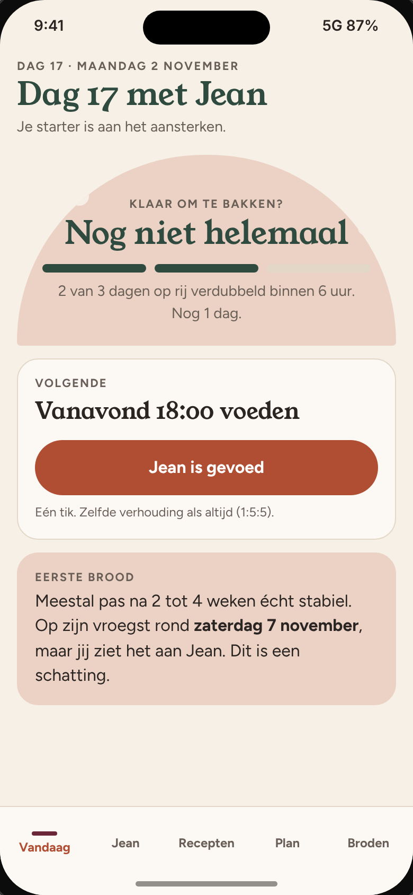
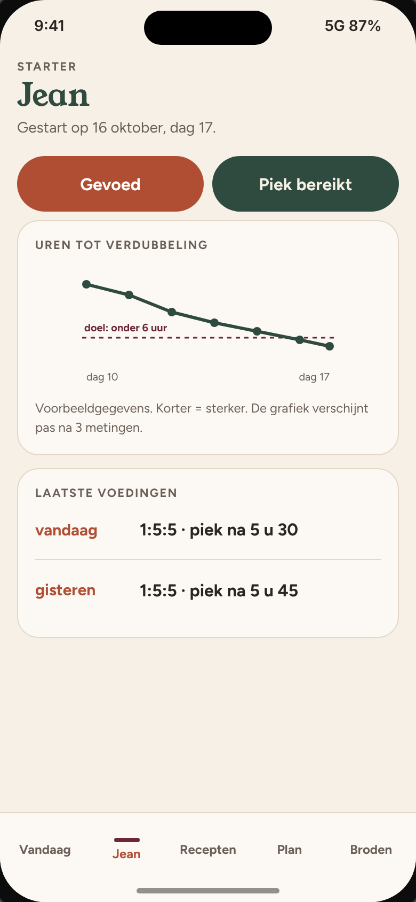
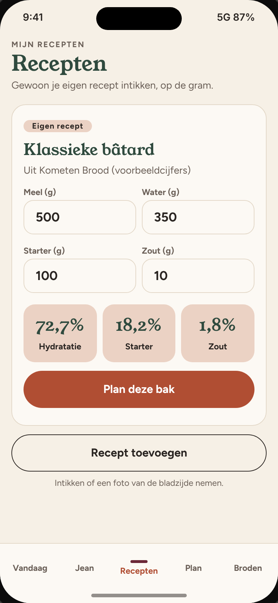
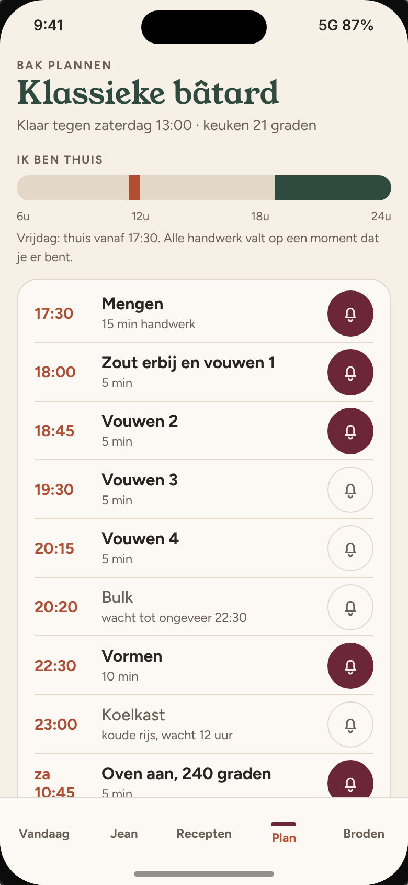
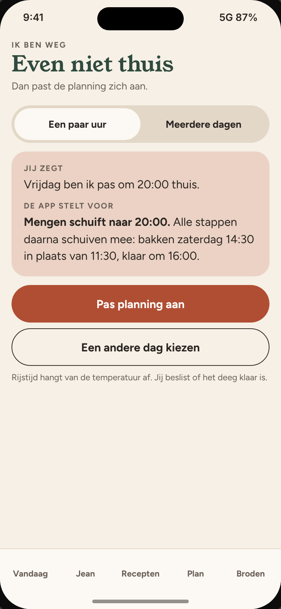
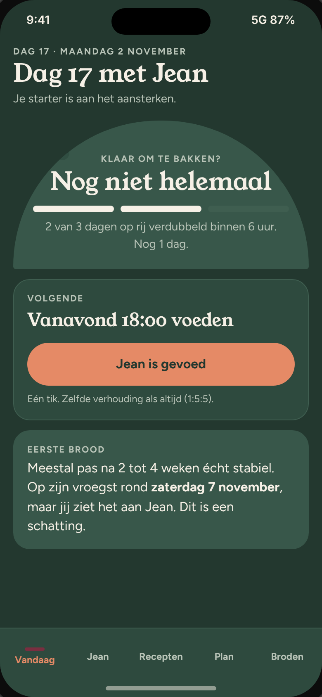
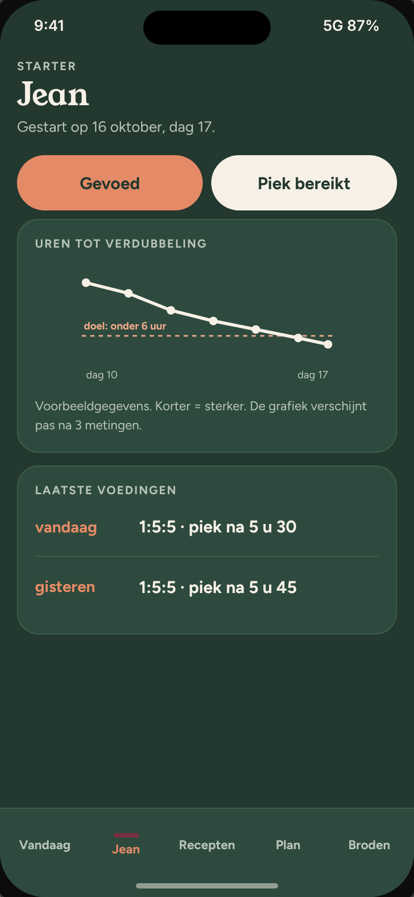
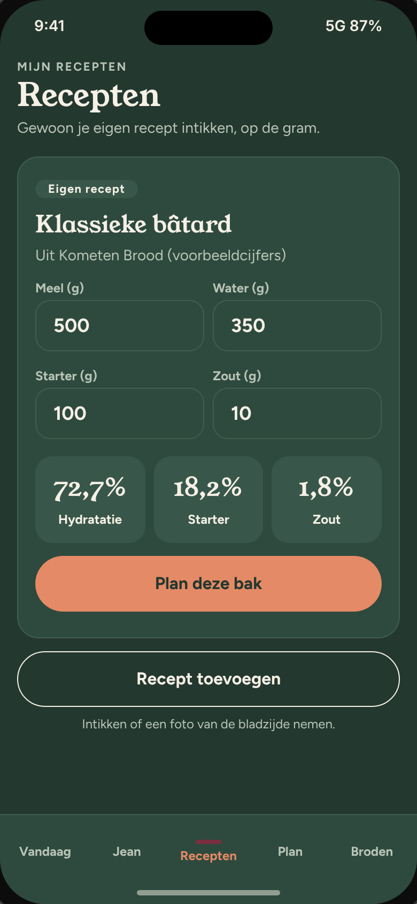
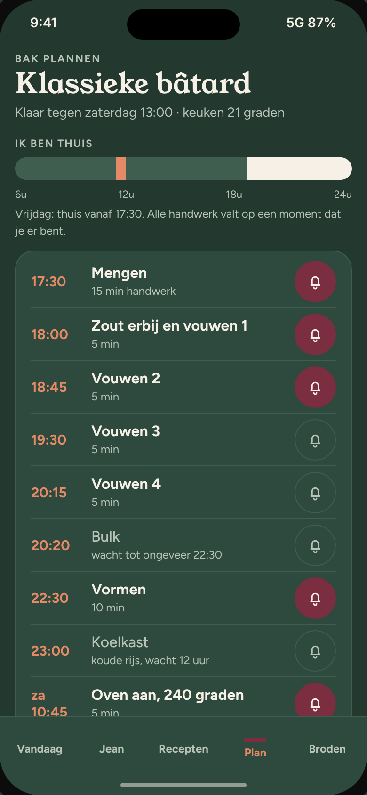
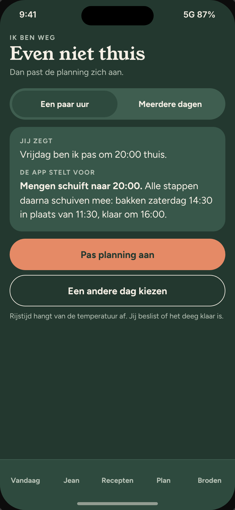

Je antwoorden zijn heel nuttig. Hier is wat ik ervan begrijp, en wat ik daarom aanpas. Klopt dit? Zeg het gerust als iets niet juist is.
Wat ik van jou begrepen heb
Je bakt minstens één brood per week. Je begint met de klassieke bâtard, later komen andere broden bij.
Je bakt op de gram en hebt eigen recepten (onder andere uit Kometen Brood).
Je hebt één starter, Jean, gestart op 16 oktober. Je houdt de verhoudingen nu in je hoofd bij en wil weten wanneer je kan beginnen bakken.
De app moet je helpen en geen extra taak zijn: zo weinig mogelijk tikken. Het brood bakken blijft de hoofdzaak.
Je wil zowel een wekker als een schema met uren, zodat je weet wanneer je tijd hebt en het in je dag kan inplannen. Meldingen mogen.
Grafieken enkel als ze echt iets vertellen.
Je wil het schema kunnen aanpassen als je een periode weg bent en niet kan kneden.
Stijl: simpel Scandinavisch met warme tinten (terracotta, donkergroen, bordeaux), rustig met een kleine punch, speelser dan look 1 en minder bruin dan look 6.
Wat dat verandert
Jean krijgt een eigen scherm met één tik "gevoed" en een eenvoudige grafiek: na hoeveel uur hij verdubbelt. Op het startscherm staat of hij klaar lijkt om mee te bakken. Dat is een schatting, jij beslist.
Je recepten staan er van het begin in, met de verhoudingen die vanzelf meerekenen.
Plan met uren en wekker: per stap zie je het uur en of het handwerk of wachten is, en met één tik zet je een wekker.
Ik ben weg: de planning schuift mee, en voor langere afwezigheid krijg je tips voor Jean.
Het bijhouden van een brood is 3 tikken: korstkleur, kruim en één zin voor de volgende keer.
Goed om te weten: alles in de voorbeelden hierna is verzonnen (cijfers, uren, grafiek). Het is om te tonen hoe het eruit ziet en aanvoelt.
Look A Scandi terracotta
Licht en rustig: kalkwit, terracotta en donkergroen, met bordeaux als kleine punch. De boog als speelse vorm.

Vandaag

Jean

Recepten

Plan

Weg
Look B Scandi donkergroen
Dezelfde schermen in donkergroen. Zacht voor de ogen als je 's avonds of vroeg bakt.

Vandaag

Jean

Recepten

Plan

Weg
Icoon
Je koos de tarwe. Hier is ze in de stijl van de app, in vier kleurcombinaties. De boog komt terug uit de schermen.
1 Terracotta2 Donkergroen3 Kalkwit4 Bordeaux
De naam wordt Crumbly, tenzij je liever iets anders wil.
Nog een paar vragen
Kort antwoorden mag. "Geen idee" mag ook.
Bij look A en B: welke vind je het mooist? Of een mix (bijvoorbeeld de lichte look met één donkergroen scherm)?
Stora Bageriet: ik kon hun uiterlijk niet terugvinden. Kan je me 2 of 3 foto's of schermafbeeldingen sturen van wat je er zo mooi aan vindt (verpakking, website, interieur)?
Welk icoon (1 tot 4) past het best? En is de naam Crumbly goed voor je? Of liever iets anders?
Jean: hoeveel uur na het voeden verdubbelt hij nu ongeveer? Hoe weet je nu dat hij op zijn piek is (potje met een elastiekje, kijken)?
Bewaar je Jean tussen twee bakken op de keukentafel of in de koelkast? En hoe vaak voed je hem nu?
Je recepten uit Kometen Brood: wil je ze zelf intikken, of liever een foto van de bladzijde nemen en dat de app het overneemt? Hoeveel recepten ongeveer?
Wanneer ben je thuis? Bijvoorbeeld op weekdagen na welk uur, en in het weekend de hele dag? Op welke dag eet je het brood graag vers (zaterdag?)
Bij welke stappen wil je een wekker: allemaal, of enkel de belangrijke (mengen, vouwen, vormen, oven aan, uit de oven)?
Hoe vaak ben je weg, en hoe lang meestal (enkele uren, een weekend, weken)? Is het scherm "Ik ben weg" zoals je het bedoelde?